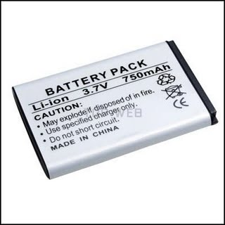

Bateries de Liti-Ió: Consells d'utilització

La majoria d'aparells portàtils avui en dia porten bateries de Liti-ió, molt més eficients que els anteriors de Níquel-Metall (NiMH) o Níquel-Cadmi (NiCd).Les bateries son delicades i hauríem de fer un bon tracte a les mateixes.
Consideracions a tenir en compte, tant sols per les bateries de Liti-ió, si son un altra tipus, cal que cerqueu altra informació:
- No cal que les carreguem moltes hores el primer cop que els compreu, o utilitzeu.
- En cap cas una bateria de Liti-Ió, cal carregar-la més de 8 hores. Cada cop el temps de càrrega són més curts.
- Les bateries de Liti-Ió, no milloren amb les carregues i descarregues, tenen tota la seva capacitat des de el seu primer ús.
- A diferència dels altres tipus de bateries, mes antics, aquestes bateries no pateixen efecte memòria, i no cal carregar-la i descarregar-la del tot sempre, els hi va millor càrregues i descarregues parcials. Si fem càrregues i descàrregues totals de la bateria, sempre, aquesta es pot fer malbé.
- Tot i això es convenient cada cert temps fer una càrrega total i una descarrega total, posem un cop al mes o cada 30 carregues/descàrregues parcials.
- No es convenient deixar-les moltes hores endollades al carregador, tot i que solen tenir un circuit de seguretat, que talla la corrent un cop carregada, sempre pot fallar i fer malbé la bateria per una sobre càrrega.
- Si guardem la bateria durant molt de temps, sense utilitzar, és millor fer-ho a un 40% o 50% que no pas carregada totalment, mantindrà millor la càrrega. en cap cas la guardarem completament descarregada.
- La duració de les bateries depèn de molts factors, però de manera general actualment, al 2009, les bateries de Li-Ió, poden aguantar fins uns 1000 cicles, per tant són uns 2 o 3 anys. A partir d'aquest moment notarem que el seu rendiment baixa, és a dir que la bateria dura menys temps. tot i això podem fer alguna cosa per millorar la seva durada:
-
Allunyar-les de fonts de calor. Un ambient fresc, allargarà la seva vida.
-
No tenir en funcionament serveis sense fil, infraroigs (IrDA), Bluetooth, Wi-Fi, quan no els fem servir. Consumeix gran quantitat d'energia.
-
Evitar gravar CD/DVD, o la seva utilització amb la bateria.
-
Disminuir la brillantor de la pantalla.
-
Desconnectar els elements USB, quan no es fan servir.
-
Minimitzar les aplicacions d'àudio, amb els altaveus, substituir per auriculars si es possible.
- En el cas dels portàtils hauríem d'afegir alguns consells més ja que són grans maltractadors de les bateries, ja que els sotmeten a dos efectes que no els va gens bé, per un costat un excés de calor i per l'altre un estres amb càrregues i descàrregues constants, però sempre amb càrregues properes al 100%.
-
Mirar de que la temperatura del portàtil no sigui molt elevada. La temperatura de les piles no hauria de superar els 40 o 50º C. Podem mirar de posar una base que refrigeri el portàtil.
-
Si utilitzem molta estona el portàtil endollat, seria convenient treure la bateria. De totes maneres compte amb que així deixem un espai on pot acumular-se molta pols o humitat, per tant evitar aquests aspectes on estiguem utilitzant el portàtil.
Be amb tots aquests consells segurament podrem allargar la vida de les nostres bateries de Liti-ió.